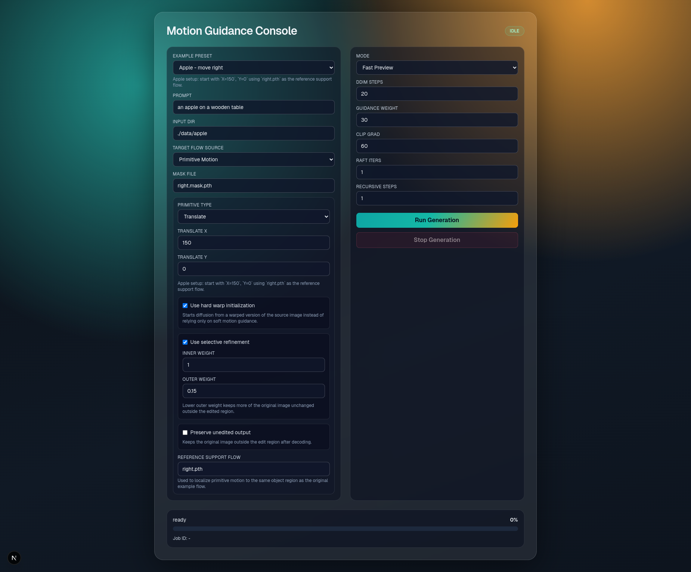
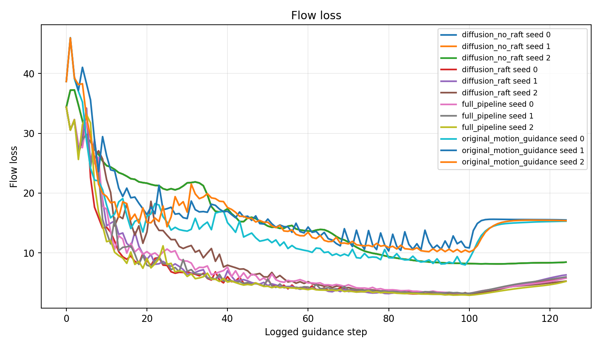
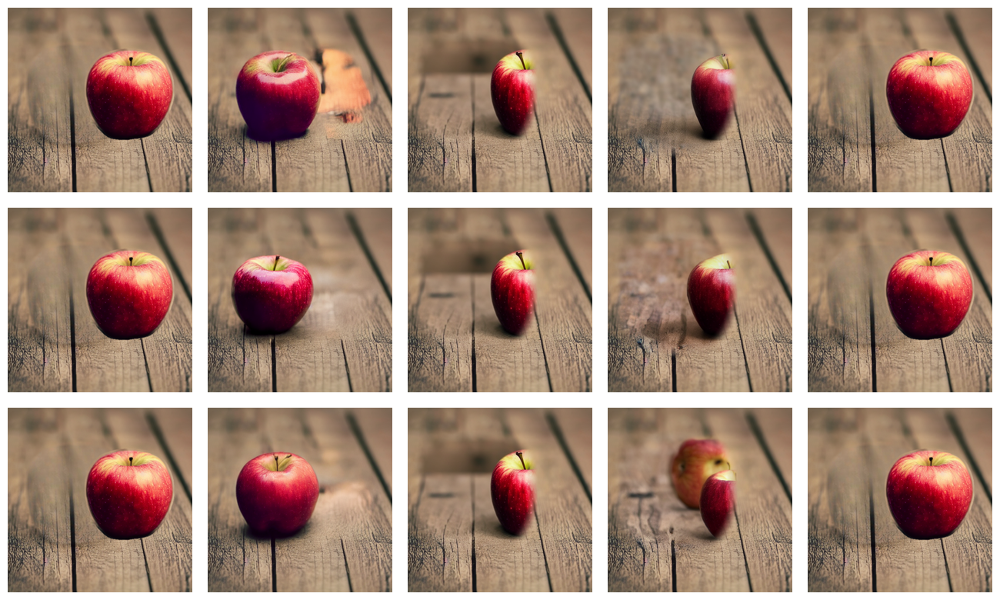
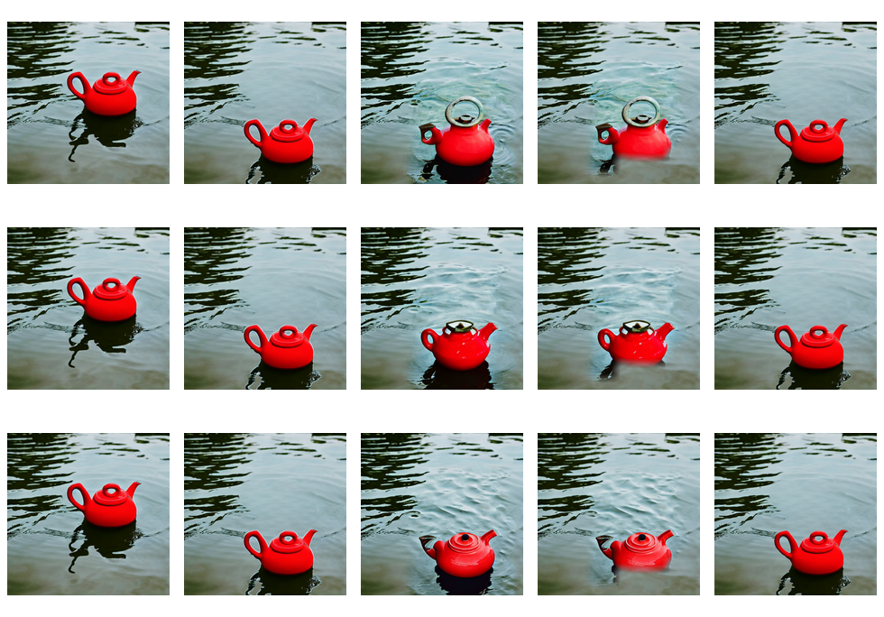
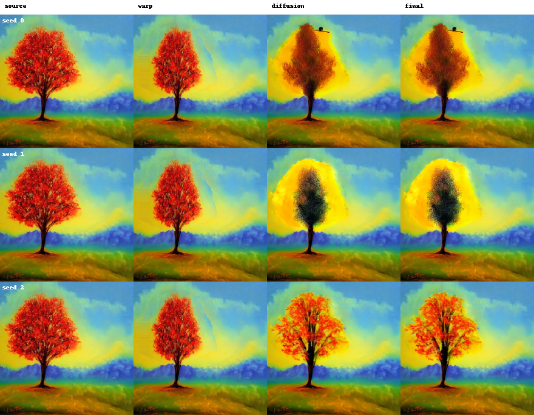
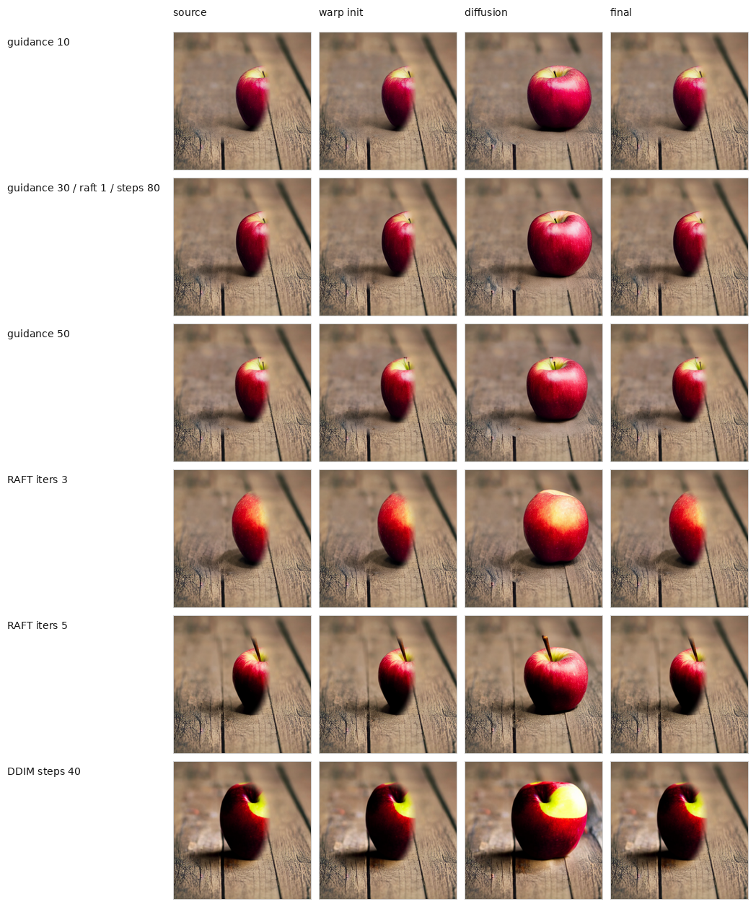
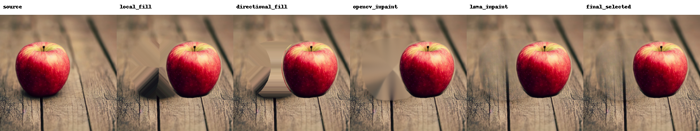

Agenda
01Introduction and motivation
02Problem statement
03ML background
04Original Motion Guidance
05Research gap
06Proposed innovation
07ML methodology
08Experimental setup
09Ablation and sensitivity results
10Limitations and conclusion
Inference-time control of Stable Diffusion using differentiable RAFT guidance, motion primitives, and restoration-aware processing
Prompts describe what should appear, but not the exact pixel displacement.
Object motion requires location, direction, magnitude, and object support.
The moved object, background, boundaries, and identity should remain coherent.
Move or reshape objects without rebuilding the complete scene.
Test alternative compositions from one source image.
Replace vague prompt instructions with understandable motion parameters.
Study how external neural losses can control a frozen generative model.
Generate dense target flow from simple primitives.
Use differentiable RAFT losses during DDIM sampling.
Protect non-edited latent regions and object identity.
Handle the source hole after object movement.
Encodes RGB images into four-channel latent tensors and decodes predictions.
Transforms the text prompt into a frozen conditioning representation.
Predicts noise under timestep and cross-attention conditioning.
Predicts dense optical flow and provides differentiable motion supervision.
Input image normalized for the VAE.
Maps pixels to a compact four-channel latent.
Noise is iteratively removed by the U-Net.
Converts the clean-latent estimate to RGB.
Current prediction used by RAFT.
Source image and current decoded diffusion prediction.
Image to be edited.
Prepared pixel-wise movement field.
Text-conditioned DDIM prediction.
Measures generated motion error.
Gradient modifies denoising.
Strength: motion-aware editing without training a new diffusion model.
Users need a prepared target flow instead of simple edit parameters.
Soft latent guidance may not enforce a large rigid displacement.
External gradients can affect areas outside the intended support.
The original object location needs plausible background reconstruction.
Structured labels for RAFT guidance
Different latent gradient strengths
Source latents outside edit support
Encode a pre-moved image
Repair newly exposed background
Horizontal and vertical offsets: dx, dy.
Uniform object expansion or contraction around its center.
Different horizontal and vertical scale factors.
Pixel displacement induced by an angle around the mask center.
Matches RAFT-predicted motion with the target field.
Warps the current prediction and compares it with the source.
Current DDIM state zt.
Predicts text-guided noise.
Decodes estimated clean image.
Predicts source-to-output flow.
Backpropagates energy to zt.
Reuse source-consistent latent states when available.
Fallback when cached latent steps are missing.
Copy source latents outside the editable region at each step.
Construct a geometrically shifted image.
Use the same Stable Diffusion VAE.
Match the initial DDIM noise level.
Run U-Net denoising with RAFT guidance.
Limits excessive latent updates caused by large loss gradients.
Guidance is disabled during the final 20% of DDIM steps.
Supports repeated denoising at a timestep when configured.
Controls recurrent flow refinement and computational cost.
Motion guidance: where content should move.
Restoration: what should appear behind it.
Compositing: how the sharp source object is placed in the final contained-translation result.
Image, prompt, mask, motion parameters.
Primitive parameters become dense labels.
CLIP + U-Net + VAE + RAFT gradients.
Restore the newly exposed source hole.
Raw ML output and final hybrid rendering.

Iterative latent denoising for diffusion variants.
Text-conditioning strength.
External motion-gradient scale for guided variants.
Seeds 0, 1, and 2 for repeated stochastic runs.
Motion error and RAFT flow loss compare generated motion with the target flow.
Background preservation checks whether unchanged regions stay close to the source.
Sharpness checks blur; boundary score checks seams around the moved object.
Runtime and GPU memory measure the cost of one edit.






My contribution is an auditable extension of Motion Guidance: primitive-generated flow supervision, spatial latent control, stronger initialization, source preservation, restoration-aware processing, fixed-seed ablations, compact sensitivity analysis, and restoration evidence.